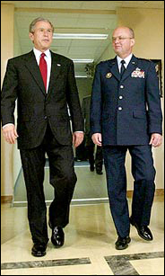

- home - Saved Articles -
~
from here on December 11, 2008:
http://www.nytimes.com/2005/12/16/politics/16program.html?_r=1&oref=slogin

In 2002, President Bush toured the National Security Agency at Fort Meade, Md., with Lt. Gen. Michael V. Hayden, who was then the agency's director and is now a full general and the principal deputy director of national intelligence.
The New York Times
December 16, 2005
Bush Lets U.S. Spy on Callers Without Courts
By JAMES RISEN and ERIC LICHTBLAU
Correction Appended
WASHINGTON, Dec. 15 - Months after the Sept. 11 attacks, President Bush secretly
authorized the National Security Agency to eavesdrop on Americans and others
inside the United States to search for evidence of terrorist activity without
the court-approved warrants ordinarily required for domestic spying, according
to government officials.
Under a presidential order signed in 2002, the intelligence agency has monitored
the international telephone calls and international e-mail messages of hundreds,
perhaps thousands, of people inside the United States without warrants over the
past three years in an effort to track possible "dirty numbers" linked to Al
Qaeda, the officials said. The agency, they said, still seeks warrants to
monitor entirely domestic communications.
The previously undisclosed decision to permit some eavesdropping inside the
country without court approval was a major shift in American
intelligence-gathering practices, particularly for the National Security Agency,
whose mission is to spy on communications abroad. As a result, some officials
familiar with the continuing operation have questioned whether the surveillance
has stretched, if not crossed, constitutional limits on legal searches.
"This is really a sea change," said a former senior official who specializes in
national security law. "It's almost a mainstay of this country that the N.S.A.
only does foreign searches."
Nearly a dozen current and former officials, who were granted anonymity because
of the classified nature of the program, discussed it with reporters for The New
York Times because of their concerns about the operation's legality and
oversight.
According to those officials and others, reservations about aspects of the
program have also been expressed by Senator John D. Rockefeller IV, the West
Virginia Democrat who is the vice chairman of the Senate Intelligence Committee,
and a judge presiding over a secret court that oversees intelligence matters.
Some of the questions about the agency's new powers led the administration to
temporarily suspend the operation last year and impose more restrictions, the
officials said.
The Bush administration views the operation as necessary so that the agency can
move quickly to monitor communications that may disclose threats to the United
States, the officials said. Defenders of the program say it has been a critical
tool in helping disrupt terrorist plots and prevent attacks inside the United
States.
Administration officials are confident that existing safeguards are sufficient
to protect the privacy and civil liberties of Americans, the officials say. In
some cases, they said, the Justice Department eventually seeks warrants if it
wants to expand the eavesdropping to include communications confined within the
United States. The officials said the administration had briefed Congressional
leaders about the program and notified the judge in charge of the Foreign
Intelligence Surveillance Court, the secret Washington court that deals with
national security issues.
The White House asked The New York Times not to publish this article, arguing
that it could jeopardize continuing investigations and alert would-be terrorists
that they might be under scrutiny. After meeting with senior administration
officials to hear their concerns, the newspaper delayed publication for a year
to conduct additional reporting. Some information that administration officials
argued could be useful to terrorists has been omitted.
Dealing With a New Threat
While many details about the program remain secret, officials familiar with it
say the N.S.A. eavesdrops without warrants on up to 500 people in the United
States at any given time. The list changes as some names are added and others
dropped, so the number monitored in this country may have reached into the
thousands since the program began, several officials said. Overseas, about 5,000
to 7,000 people suspected of terrorist ties are monitored at one time, according
to those officials.
Several officials said the eavesdropping program had helped uncover a plot by
Iyman Faris, an Ohio trucker and naturalized citizen who pleaded guilty in 2003
to supporting Al Qaeda by planning to bring down the Brooklyn Bridge with
blowtorches. What appeared to be another Qaeda plot, involving fertilizer bomb
attacks on British pubs and train stations, was exposed last year in part
through the program, the officials said. But they said most people targeted for
N.S.A. monitoring have never been charged with a crime, including an
Iranian-American doctor in the South who came under suspicion because of what
one official described as dubious ties to Osama bin Laden.
The eavesdropping program grew out of concerns after the Sept. 11 attacks that
the nation's intelligence agencies were not poised to deal effectively with the
new threat of Al Qaeda and that they were handcuffed by legal and bureaucratic
restrictions better suited to peacetime than war, according to officials. In
response, President Bush significantly eased limits on American intelligence and
law enforcement agencies and the military.
But some of the administration's antiterrorism initiatives have provoked an
outcry from members of Congress, watchdog groups, immigrants and others who
argue that the measures erode protections for civil liberties and intrude on
Americans' privacy.
Opponents have challenged provisions of the USA Patriot Act, the focus of
contentious debate on Capitol Hill this week, that expand domestic surveillance
by giving the Federal Bureau of Investigation more power to collect information
like library lending lists or Internet use. Military and F.B.I. officials have
drawn criticism for monitoring what were largely peaceful antiwar protests. The
Pentagon and the Department of Homeland Security were forced to retreat on plans
to use public and private databases to hunt for possible terrorists. And last
year, the Supreme Court rejected the administration's claim that those labeled
"enemy combatants" were not entitled to judicial review of their open-ended
detention.
Mr. Bush's executive order allowing some warrantless eavesdropping on those
inside the United States - including American citizens, permanent legal
residents, tourists and other foreigners - is based on classified legal opinions
that assert that the president has broad powers to order such searches, derived
in part from the September 2001 Congressional resolution authorizing him to wage
war on Al Qaeda and other terrorist groups, according to the officials familiar
with the N.S.A. operation.
The National Security Agency, which is based at Fort Meade, Md., is the nation's
largest and most secretive intelligence agency, so intent on remaining out of
public view that it has long been nicknamed "No Such Agency." It breaks codes
and maintains listening posts around the world to eavesdrop on foreign
governments, diplomats and trade negotiators as well as drug lords and
terrorists. But the agency ordinarily operates under tight restrictions on any
spying on Americans, even if they are overseas, or disseminating information
about them.
What the agency calls a "special collection program" began soon after the Sept.
11 attacks, as it looked for new tools to attack terrorism. The program
accelerated in early 2002 after the Central Intelligence Agency started
capturing top Qaeda operatives overseas, including Abu Zubaydah, who was
arrested in Pakistan in March 2002. The C.I.A. seized the terrorists' computers,
cellphones and personal phone directories, said the officials familiar with the
program. The N.S.A. surveillance was intended to exploit those numbers and
addresses as quickly as possible, they said.
In addition to eavesdropping on those numbers and reading e-mail messages to and
from the Qaeda figures, the N.S.A. began monitoring others linked to them,
creating an expanding chain. While most of the numbers and addresses were
overseas, hundreds were in the United States, the officials said.
Under the agency's longstanding rules, the N.S.A. can target for interception
phone calls or e-mail messages on foreign soil, even if the recipients of those
communications are in the United States. Usually, though, the government can
only target phones and e-mail messages in the United States by first obtaining a
court order from the Foreign Intelligence Surveillance Court, which holds its
closed sessions at the Justice Department.
Traditionally, the F.B.I., not the N.S.A., seeks such warrants and conducts most
domestic eavesdropping. Until the new program began, the N.S.A. typically
limited its domestic surveillance to foreign embassies and missions in
Washington, New York and other cities, and obtained court orders to do so.
Since 2002, the agency has been conducting some warrantless eavesdropping on
people in the United States who are linked, even if indirectly, to suspected
terrorists through the chain of phone numbers and e-mail addresses, according to
several officials who know of the operation. Under the special program, the
agency monitors their international communications, the officials said. The
agency, for example, can target phone calls from someone in New York to someone
in Afghanistan.
Warrants are still required for eavesdropping on entirely domestic-to-domestic
communications, those officials say, meaning that calls from that New Yorker to
someone in California could not be monitored without first going to the Federal
Intelligence Surveillance Court.
A White House Briefing
After the special program started, Congressional leaders from both political
parties were brought to Vice President Dick Cheney's office in the White House.
The leaders, who included the chairmen and ranking members of the Senate and
House intelligence committees, learned of the N.S.A. operation from Mr. Cheney,
Lt. Gen. Michael V. Hayden of the Air Force, who was then the agency's director
and is now a full general and the principal deputy director of national
intelligence, and George J. Tenet, then the director of the C.I.A., officials
said.
It is not clear how much the members of Congress were told about the
presidential order and the eavesdropping program. Some of them declined to
comment about the matter, while others did not return phone calls.
Later briefings were held for members of Congress as they assumed leadership
roles on the intelligence committees, officials familiar with the program said.
After a 2003 briefing, Senator Rockefeller, the West Virginia Democrat who
became vice chairman of the Senate Intelligence Committee that year, wrote a
letter to Mr. Cheney expressing concerns about the program, officials
knowledgeable about the letter said. It could not be determined if he received a
reply. Mr. Rockefeller declined to comment. Aside from the Congressional
leaders, only a small group of people, including several cabinet members and
officials at the N.S.A., the C.I.A. and the Justice Department, know of the
program.
Some officials familiar with it say they consider warrantless eavesdropping
inside the United States to be unlawful and possibly unconstitutional, amounting
to an improper search. One government official involved in the operation said he
privately complained to a Congressional official about his doubts about the
program's legality. But nothing came of his inquiry. "People just looked the
other way because they didn't want to know what was going on," he said.
A senior government official recalled that he was taken aback when he first
learned of the operation. "My first reaction was, 'We're doing what?' " he said.
While he said he eventually felt that adequate safeguards were put in place, he
added that questions about the program's legitimacy were understandable.
Some of those who object to the operation argue that is unnecessary. By getting
warrants through the foreign intelligence court, the N.S.A. and F.B.I. could
eavesdrop on people inside the United States who might be tied to terrorist
groups without skirting longstanding rules, they say.
The standard of proof required to obtain a warrant from the Foreign Intelligence
Surveillance Court is generally considered lower than that required for a
criminal warrant - intelligence officials only have to show probable cause that
someone may be "an agent of a foreign power," which includes international
terrorist groups - and the secret court has turned down only a small number of
requests over the years. In 2004, according to the Justice Department, 1,754
warrants were approved. And the Foreign Intelligence Surveillance Court can
grant emergency approval for wiretaps within hours, officials say.
Administration officials counter that they sometimes need to move more urgently,
the officials said. Those involved in the program also said that the N.S.A.'s
eavesdroppers might need to start monitoring large batches of numbers all at
once, and that it would be impractical to seek permission from the Foreign
Intelligence Surveillance Court first, according to the officials.
The N.S.A. domestic spying operation has stirred such controversy among some
national security officials in part because of the agency's cautious culture and
longstanding rules.
Widespread abuses - including eavesdropping on Vietnam War protesters and civil
rights activists - by American intelligence agencies became public in the 1970's
and led to passage of the Foreign Intelligence Surveillance Act, which imposed
strict limits on intelligence gathering on American soil. Among other things,
the law required search warrants, approved by the secret F.I.S.A. court, for
wiretaps in national security cases. The agency, deeply scarred by the scandals,
adopted additional rules that all but ended domestic spying on its part.
After the Sept. 11 attacks, though, the United States intelligence community was
criticized for being too risk-averse. The National Security Agency was even
cited by the independent 9/11 Commission for adhering to self-imposed rules that
were stricter than those set by federal law.
Concerns and Revisions
Several senior government officials say that when the special operation began,
there were few controls on it and little formal oversight outside the N.S.A. The
agency can choose its eavesdropping targets and does not have to seek approval
from Justice Department or other Bush administration officials. Some agency
officials wanted nothing to do with the program, apparently fearful of
participating in an illegal operation, a former senior Bush administration
official said. Before the 2004 election, the official said, some N.S.A.
personnel worried that the program might come under scrutiny by Congressional or
criminal investigators if Senator John Kerry, the Democratic nominee, was
elected president.
In mid-2004, concerns about the program expressed by national security
officials, government lawyers and a judge prompted the Bush administration to
suspend elements of the program and revamp it.
For the first time, the Justice Department audited the N.S.A. program, several
officials said. And to provide more guidance, the Justice Department and the
agency expanded and refined a checklist to follow in deciding whether probable
cause existed to start monitoring someone's communications, several officials
said.
A complaint from Judge Colleen Kollar-Kotelly, the federal judge who oversees
the Federal Intelligence Surveillance Court, helped spur the suspension,
officials said. The judge questioned whether information obtained under the
N.S.A. program was being improperly used as the basis for F.I.S.A. wiretap
warrant requests from the Justice Department, according to senior government
officials. While not knowing all the details of the exchange, several government
lawyers said there appeared to be concerns that the Justice Department, by
trying to shield the existence of the N.S.A. program, was in danger of
misleading the court about the origins of the information cited to justify the
warrants.
One official familiar with the episode said the judge insisted to Justice
Department lawyers at one point that any material gathered under the special
N.S.A. program not be used in seeking wiretap warrants from her court. Judge
Kollar-Kotelly did not return calls for comment.
A related issue arose in a case in which the F.B.I. was monitoring the
communications of a terrorist suspect under a F.I.S.A.-approved warrant, even
though the National Security Agency was already conducting warrantless
eavesdropping.
According to officials, F.B.I. surveillance of Mr. Faris, the Brooklyn Bridge
plotter, was dropped for a short time because of technical problems. At the
time, senior Justice Department officials worried what would happen if the N.S.A.
picked up information that needed to be presented in court. The government would
then either have to disclose the N.S.A. program or mislead a criminal court
about how it had gotten the information.
Several national security officials say the powers granted the N.S.A. by
President Bush go far beyond the expanded counterterrorism powers granted by
Congress under the USA Patriot Act, which is up for renewal. The House on
Wednesday approved a plan to reauthorize crucial parts of the law. But final
passage has been delayed under the threat of a Senate filibuster because of
concerns from both parties over possible intrusions on Americans' civil
liberties and privacy.
Under the act, law enforcement and intelligence officials are still required to
seek a F.I.S.A. warrant every time they want to eavesdrop within the United
States. A recent agreement reached by Republican leaders and the Bush
administration would modify the standard for F.B.I. wiretap warrants, requiring,
for instance, a description of a specific target. Critics say the bar would
remain too low to prevent abuses.
Bush administration officials argue that the civil liberties concerns are
unfounded, and they say pointedly that the Patriot Act has not freed the N.S.A.
to target Americans. "Nothing could be further from the truth," wrote John Yoo,
a former official in the Justice Department's Office of Legal Counsel, and his
co-author in a Wall Street Journal opinion article in December 2003. Mr. Yoo
worked on a classified legal opinion on the N.S.A.'s domestic eavesdropping
program.
At an April hearing on the Patriot Act renewal, Senator Barbara A. Mikulski,
Democrat of Maryland, asked Attorney General Alberto R. Gonzales and Robert S.
Mueller III, the director of the F.B.I., "Can the National Security Agency, the
great electronic snooper, spy on the American people?"
"Generally," Mr. Mueller said, "I would say generally, they are not allowed to
spy or to gather information on American citizens."
President Bush did not ask Congress to include provisions for the N.S.A.
domestic surveillance program as part of the Patriot Act and has not sought any
other laws to authorize the operation. Bush administration lawyers argued that
such new laws were unnecessary, because they believed that the Congressional
resolution on the campaign against terrorism provided ample authorization,
officials said.
The Legal Line Shifts
Seeking Congressional approval was also viewed as politically risky because the
proposal would be certain to face intense opposition on civil liberties grounds.
The administration also feared that by publicly disclosing the existence of the
operation, its usefulness in tracking terrorists would end, officials said.
The legal opinions that support the N.S.A. operation remain classified, but they
appear to have followed private discussions among senior administration lawyers
and other officials about the need to pursue aggressive strategies that once may
have been seen as crossing a legal line, according to senior officials who
participated in the discussions.
For example, just days after the Sept. 11, 2001, attacks on New York and the
Pentagon, Mr. Yoo, the Justice Department lawyer, wrote an internal memorandum
that argued that the government might use "electronic surveillance techniques
and equipment that are more powerful and sophisticated than those available to
law enforcement agencies in order to intercept telephonic communications and
observe the movement of persons but without obtaining warrants for such uses."
Mr. Yoo noted that while such actions could raise constitutional issues, in the
face of devastating terrorist attacks "the government may be justified in taking
measures which in less troubled conditions could be seen as infringements of
individual liberties."
The next year, Justice Department lawyers disclosed their thinking on the issue
of warrantless wiretaps in national security cases in a little-noticed brief in
an unrelated court case. In that 2002 brief, the government said that "the
Constitution vests in the President inherent authority to conduct warrantless
intelligence surveillance (electronic or otherwise) of foreign powers or their
agents, and Congress cannot by statute extinguish that constitutional
authority."
Administration officials were also encouraged by a November 2002 appeals court
decision in an unrelated matter. The decision by the Foreign Intelligence
Surveillance Court of Review, which sided with the administration in dismantling
a bureaucratic "wall" limiting cooperation between prosecutors and intelligence
officers, cited "the president's inherent constitutional authority to conduct
warrantless foreign intelligence surveillance."
But the same court suggested that national security interests should not be
grounds "to jettison the Fourth Amendment requirements" protecting the rights of
Americans against undue searches. The dividing line, the court acknowledged, "is
a very difficult one to administer."
Barclay Walsh contributed research for this article.
Correction: Dec. 28, 2005, Wednesday:
Because of an editing error, a front-page article on Dec. 16 about a decision by
President Bush to authorize the National Security Agency to eavesdrop on
Americans and others inside the United States to search for evidence of
terrorist activity without warrants ordinarily required for domestic spying
misstated the name of the court that would normally issue those warrants. It is
the Foreign - not Federal -Intelligence Surveillance Court.
* Copyright 2005The New York Times Company
~
See also: http://www.washingtonpost.com/wp-dyn/content/article/2007/08/04/AR2007080400285.html
- home - Saved Articles -
~